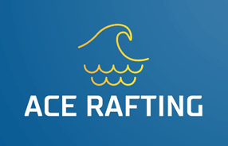

Overview
Purpose
Be ready to paddle! A healthy dose of adrenaline on this energetic journey. We adapt each run according to your needs and how you feel. Come face some of the most intense waves! Everyone will have a blast!
Audience
Enjoy an outdoor activity and discover world's green sights. A great way to initiate kids and adults to white water excursions! We'll have just the right activity for you and your friends or family!
Branding
Website Logo
Style Guide
Color Palette
Palette URL:
https://colorhunt.co/palette/ffcc70fffadd8ecddd22668d| Primary | Secondary | Accent 1 | Accent 2 |
|---|---|---|---|
| #22668D | #FFCC70 | #8ECDDD |
Typography
Heading Font: Montserrat
Paragraph Font: Roboto
Normal paragraph example
Specially thought to give the chance to young kids and people less at ease around water to experience a gentler rafting trip. In a safe but still extremely fun way, you'll ride class 1 and 2 waves while admiring bigger waves. You might even be able to end the experience with a swim in mellow currents. Nothing better for an initiation and a great outdoor family day!
Colored paragraph example
Are you eager for new experiences and you don't mind getting splashed by waves ? The adventurous excursion is perfect for you! After the last waves, you’ll have the opportunity go for a swim while you appreciate an incomparable view. A unique, safe and unforgettable experience for all the adventurers of this world.
Navigation
Site Map
Wireframes
Home